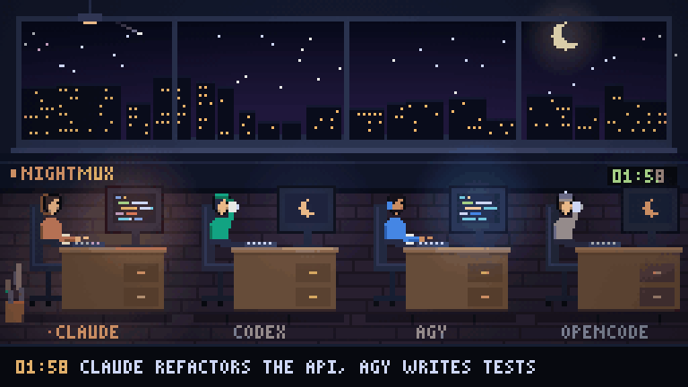

nightmux drives Claude Code, Codex, Gemini, agy, opencode, Cursor, Amp, Goose and Qwen Code in tmux — from Telegram or a dashboard on your phone. When one hits its usage limit, your queue waits and resumes the moment the window resets, or hands the work to another agent.

Holds your queue through a 5-hour limit and resumes on reset — or one tap hands the work to another agent. Warns you an hour before it happens.
Each project is a Telegram topic (or a chat in the dashboard). Menus become buttons. Photos, files and voice notes go straight to the agent.
!goal npm test runs your tests after every turn and sends failures back. Stops and asks when it goes in circles.
Same task, two agents, two worktrees. Pick the winner with one tap.
Auto-compact, a fresh session per task, a prompt coach that catches vague prompts, models picked by task.
What got done overnight, which PRs are ready, which errors came in — and a GIF of the night.
curl -fsSL https://raw.githubusercontent.com/mmr710/nightmux/main/install.sh | sh
One Python file, no dependencies, Linux or macOS with tmux. No bot? It runs dashboard-only.
Want to look first? python3 nightmux.py --demo — no bot, no keys.
Or with Docker: docker run -it -v ~/code:/code -p 9090:9090 ghcr.io/mmr710/nightmux — see the README.